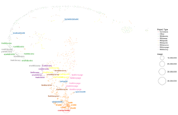
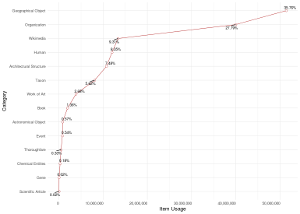
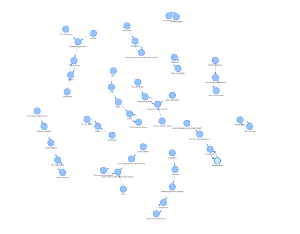

0. What is this?
Wikidata Concepts Monitor (WDCM)
is a system of dashboards that monitor the usage of Wikidata
items on WMF sister projects. The dashboards are currently supported by
(1) analytical overviews of Wikidata item usage that are organized in a
number of semantic categories, (2) per sister project analytical
overviews of Wikidata item usage, and (3) distributional semantics
models of Wikidata usage that offer analytical insights into the
structure of Wikidata item usage similarity across the sister projects
and/or semantic categories of Wikidata items.
In other
words, here you can discover how
much does a particular project use Wikidata, what
semantic categories of Wikidata items are more popular in a particular
project or a subset of projects,
how similar are two or more
projects in respect to the way they utilize Wikidata, what
are the most popular Wikidata items in a particular project or a set of
projects, and similar.
1. Getting started
In order to be able to use the WDCM system in a way it was ment and designed to be used, i.e. with a clear understanding of what is it built for and why it was built that way, you probably need to get to learn about some important WDCM definitions (and the constraints that dictated them) first. You can do that by reading through the Definitions section of the WDCM Wikitech Technical Documentation . Do not panic, please: it is written in a language that a non-technical person who does not necessarily care about Data Science or Cognitive Science can understand.Obviously, the current version of the WDCM system focuses on Wikidata item usage.
To start browsing the WDCM system, a list of currently available dashboards is provided on the navigation sidebar to the right.
2. Who built the WDCM system?
The WDCM system is developed by Goran
S. Milovanović, Data Scientist, Wikimedia Foundaiton Deutschland,
with a help of many people to prepare complex ETL procedures and
productionize the system, such as Dan Florin Andreescu, Software engineer, Wikimedia
Foundation, and Adam
Shorland, Software Developer, Wikimedia Foundation Deutschland. Lydia
Pintcher, Product Manager of Wikidata, Wikimedia Deutschland,
supervised the development of the system and contributed the currently
used WDCM Semantic Taxonomy that the system relies on. The software development of
the WDCM system is supervised by Tobias Gritschacher, Engineering Manager, Wikimedia
Foundation Deutschland, while Jan Dittrich, UX Design / Research, Wikimedia
Foundation Deutschland supervises the UI/UX aspects.The write-ups of the
previous experiences in managing Shiny Dashboards on behalf of
Mikhail Popov and the team that built our
Discovery Dashboards
were very helpful in the development of the WDCM Dashboards.3. How does it work?
The WDCM Wikitech Technical
Documentation
should be providing enough information in respect to how WDCM works. To
put it in a nutshell, the current version of the WDCM system is fully
developed in R,
and supported by Apache
Hive and Apache
Sqoop to enable Big Data processing of the wbc_entity_usage tables that provide for Wikidata
usage client-side tracking over sister projects. MariaDB runs the WDCM
dashboards back-end support, while the dashboards themselves are built
in the RStudio
Shiny framework and hosted by an open source version of the RStudio Shiny Server. The WDCM Engine scripts
perform many data pre-processing procedures before the machine learning
phase takes over to deliver the results to the front-end, utilizing Latent Dirichlet Allocation and t-SNE among other algorithms. The front-end data
visualizations are developed primarily in {ggplot2}, {visNetwork}, and {rBokeh}.4. Getting in touch and contributing
Any ideas and contributions are, of course, welcome. If you have
anything on your mind you should not hesitate to contact Goran S. Milovanovic, Data Scientist, WMDE,
goran.milovanovic_ext@wikimedia.de,
IRC e-mail:nickname: goransm.
WDCM Dashboards
WDCM Overview

The Overview Dashboard provided an introductory overview - the "big picture" of Wikidata usage.
WDCM Usage

The Usage Dashboard provides a thorough insight into Wikidata usage across the sister projects and semantic categories.
WDCM Semantics

The Semantics Dashboard provides an insight into the distributional
semantics of Wikidata usage.